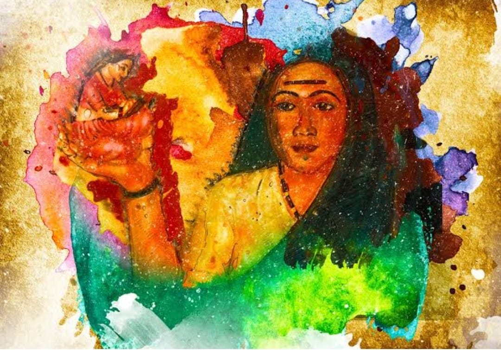
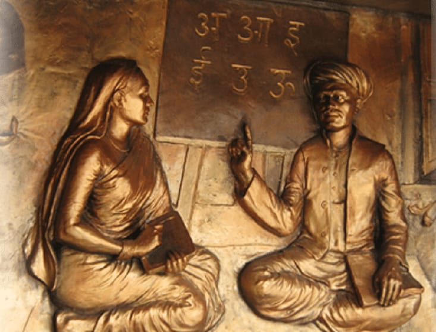

Savitribai Phule - The First Lady Teacher In India
About Savitribai Phule Biography

☛ Savitribai Phule was a trailblazer in providing education for girls and for ostracized portions of society. She became the first female teacher in India (1848) and opened a school for girls with her husband, Jyotirao Phule.
☛ She went on to establish a shelter (1864) for destitute women and played a crucial role in grooming Jyotirao Phule’s pioneering institution, Satyashodhak Samaj, (1873) that fought for equality of all classes.Her life is heralded as a beacon of women’s rights in India. She is often referred to as the mother of Indian feminism.
☛ Savitribai was born in Naigaon, a small village in the state of Maharashtra, India. As a young girl, Savitribai displayed a strong sense of curiosity and ambition. Savitribai was married to Jyotirao Phule in 1840 at the age of nine and become a child bride. She moved to Pune with him soon after.
☛ Savitribai’s most prized possession was a book given to her by a Christian missionary. Impressed by her enthusiasm to learn, Jyotirao taught Savitribai to read and write. Savitribai undertook teachers’ training at Ahmednagar and in Pune. She became a qualified teacher after she passed her 4th examination in 1847.
☛ Determined to change the condition of women in the country, Savitribai, along with Jyotirao, a man of social reform himself, opened a school for girls in 1848. She became the first female teacher of India. This caused waves of fury in society.
☛ In 1853, Savitribai and Jyotirao established an education society that opened more schools for girls and women from all classes, in surrounding villages.

☛ Sympathising with the plight of widows in India, Savitribai opened a shelter for them in 1854. After years of continuous reform, she paved the way to build a large shelter in 1864 for destitute women, widows and child brides cast aside by their families. She educated them all. She also adopted Yashwantrao, the son of a widow sheltered in this institution.
☛ Oppressed classes were forbidden from drinking water from the common village well. Jyotirao and Savitribai dug a well in their own backyard for them to drink water from. This move caused a furore in 1868.
☛ Savitribai was instrumental in shaping Satyashodhak Samaj, The Truthseeker’s Society, a brainchild of Jyotirao’s. The Samaj primarily aimed at eliminating discrimination and the need for social order. In 1873, Savitribai started the practice of Satyashodhak Marriage, where couples took an oath of education and equality.
☛ Her efforts didn’t go unnoticed. She was declared to be the best teacher in the state by the British government in 1852. She received further praise from the government in 1853 for her work in the field of education.
☛ In 1890, Jyotirao passed away. Defying all social norms, she lit his funeral pyre. She carried on Jyotirao’s legacy and took over the reigns of Satyashodhak Samaj.
☛ The bubonic plague spread across Maharashtra in 1897. Not one to be a mere spectator, Savitribai rushed to affected areas to help. She opened a clinic for plague victims in Hadapsar, Pune.
☛ While carrying a 10-year-old plague victim to the clinic in her arms, she contracted the disease herself. On March 10, 1897, Savitribai Phule breathed her last.
☛ Her life and work is a testament to social reform and female empowerment in Indian society. She remains an inspiration for many women rights’ activists in modern times.